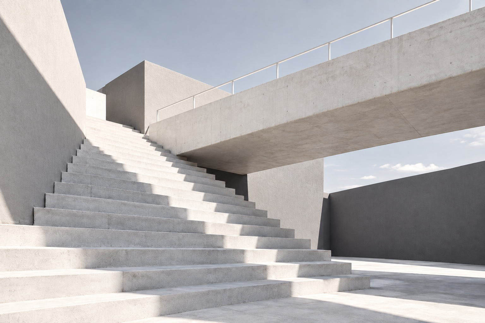
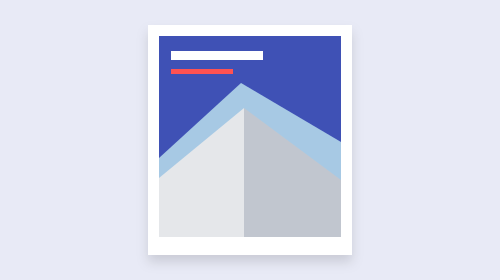

MATERIAL CONTINUUM
从零散材料， 到清晰表达
找到主题，梳理关系，再安排阅读顺序。图像、标题与段落共同构成一条清楚的叙事线。
提炼重点 / 组织叙事 / 安排版式

现实中的遮挡、距离与层次，帮助我们判断物体之间的关系。数字界面也可以借用这些直觉。
卡片组织信息，阴影表达层级。展开、选择与返回，让内容之间的联系更加清楚。
找到主题，梳理关系，再安排阅读顺序。图像、标题与段落共同构成一条清楚的叙事线。
提炼重点 / 组织叙事 / 安排版式
空间交代关系，版式组织阅读。两者共同帮助读者理解内容。
遮挡与阴影说明前后关系，让表面的高度与叠合清楚可见。
对齐、间距与字号区分主次。相关内容形成分节，便于连续阅读。
共享视觉规则，让每一页按内容选择表达。

用照片或图形建立情境，让主题在第一眼被识别。
让相关观点并列呈现，沿相同维度比较差异与联系。
用连续段落展开理由，给论证与阅读留下完整空间。
让每一步都服务于同一个阅读目标。
先写出核心问题，再安排支持它的内容。
建立情境、解释关系和比较差异，各有适合的版式。
标题、图像与段落应当共同引导阅读。
内容较多时，先梳理主次，再分段或分页。
有些内容需要照片建立情境，有些概念适合用插画解释。论证、说明与比较，也可以由文字完整承担。选择版式时，先判断读者需要理解什么。
留白帮助区分信息，也让连续阅读获得停顿。内容较多时，先梳理主次，再安排分段与分页。每一页都保留明确的重点和完整的阅读线索。